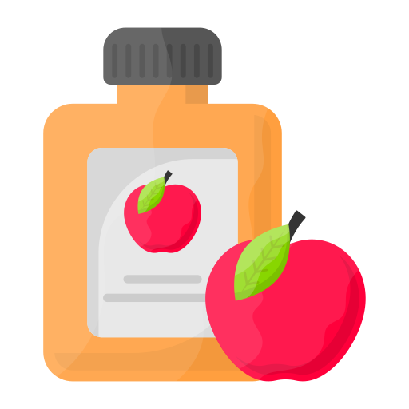

Bebidas Fermentadas
As Bebidas Fermentadas surgem através de um processo onde os açucares dos componentes são transformados em álcool, ácido carbônico, dentre outros. O álcool, por sua vez, é uma substância química que pode ser encontrada em bebidas alcoólicas (fermentadas), produtos domésticos, combustível e muito mais.
Uma bebida alcoólica é aquela que contém etanol, que é uma forma de álcool produzida pela fermentação de grãos, frutas ou outros tipos de açúcar. É uma droga psicoativa que atua como depressora do sistema nervoso central, que está presente no nosso dia-a-dia, tanto que, uma parcela considerável da população sofre com problema de alcoolismo, como no caso de Brasil, em que 3% da população acima de 15 anos é considerada alcoólatra, segundo a OMS. Esse problema é reforçado pelas campanhas publicitárias e as mídias, principalmente no cinema, que também foi o responsável pela propagação do cigarro.
São exemplos dessas bebidas:
-

Cerveja
-

Vinho
-

Cidra
-
Hidromel
-
Champagne